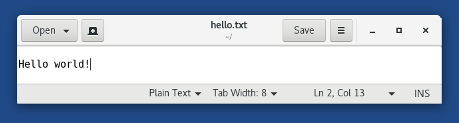
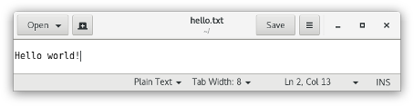
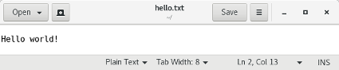

Introduction
We use this style guide to keep our documentation clear, consistent, and accessible to a global audience. Apply this style guide when writing new documentation or when updating existing documentation.
Reference hierarchy
Use references in the following order:
This style guide.
The GNOME Documentation Style Guide.
Read at least Section 1 ― Fundamental Concepts of Technical Documentation.
The following sections are also of particular interest or have been debated within Tails before:
- 4. Writing documentation for an International Audience includes specific rules about how to write documentation that is easier to translate, with practical examples.
- 5.2. Checks You Can Do Yourself lists the top ten topics that you need to watch out for when you review your work.
- A. Recommended Terminology contains a glossary of terms for use when writing documentation.
Other style guides:
For spelling of words, we use the Merriam-Webster dictionary.
The following resources can also be helpful when writing documentation for Tails:
Related online resources
Jakob Nielsen's How Users Read on the Web and Be Succinct - Writing for the Web. However do not use bold for scanning in instruction steps. Steps should be short enough and bold mixes up with other GUI formatting.
Wikipedia.org, Webopedia.com, Whatis.com can be used as terminology websites for technical terms.
Style and usage
administration password vs root password
Use administration password. Avoid root password even though many Linux users would use it.
For example:
Set up an administration password when you start Tails.
Start Tails and set up an administration password.
altattributes for imagesThe
altattribute of an image is, for example, read by screen readers in place of images allowing the content and function of the image to be accessible to those with visual or certain cognitive disabilities.Every image must have an
altattribute but it can be empty (alt="").In the case of our documentation:
Often screenshots require no additional information to clarify their content. They often provide visual context that is useful for people who see them but not necessary to people who don't see them.
For graphical buttons or icons, use as
altattribute the text that is read by the GNOME Screen Reader (or that you think should be read if none is read). For example:1. Click on the <span class="guimenu"> [[!img lib/unlock.png alt="Unlock" class="symbolic" link="no"]] </span> button.
For more guidelines and examples about writing good
altattributes, read the article on alternative text by WebAIM.
anchor (HTML anchor)
Use HTML anchors to provide shortcuts when pointing people to sections inside a page.
Keep them as short as possible as they appear in the URL.
Use lowercase and hyphens instead of underscores to separate words.
For example:
<a id="2014">indoc/about/financesto be able to point tohttps://tails.boum.org/finances#2014.
When adding an anchor to a section on a page that has a table of content, add the id attribute directly to the HTML heading. ikiwiki will automatically reference it in the table of content instead of the default value that might change over time.
For example:
[[!toc]] <h1 id="my-section">My section</h1>
Creates a hyperlink to #my-section in the table of content instead of a hyperlink to #index1h1 that might change with the structure of the page.
To reduce translation work, avoid adding anchors to translated pages when we are not using them anywhere on the website.
boot vs start
Use start and restart as much as possible to refer to starting a computer on Tails; boot is almost always unnecessary jargon.
You might use boot when the word is displayed to the user by the computer or when writing for a technical audience, like in our design documentation.
Use boot when referring to boot options, which are only documented for workarounds or a technical audience.
For example:
When starting Tails, add the toram boot option. See our instructions on modifying the boot options using the Boot Loader.
To make the display work properly, add the following boot option using the Boot Loader when starting Tails:
nouveau.noaccel=1
Boot Menu and Boot Loader
Use Boot Loader when referring to either GRUB or SYSLINUX.
For example:
- The Boot Loader is the first screen that appears when starting Tails.
Use Boot Menu and Boot Menu key when referring to the BIOS screen that allows choosing from which device to start from.

bulleted lists
Refer to this article from NN/g on presenting bulleted lists.
Always add empty lines between list items to:
Make them easier to read.
Make them easier to translate. Each item from the list will be put in a separate PO string in PO files by the PO plugin when building the website.
capitalization
Use sentence case for titles and headings
Do not capitalize the second or subsequent words, unless they are proper nouns. Sentence case looks less formal and is easier to read for a global audience.
See the capitalization rules from Wikipedia.
Use title case for GUI items
Buttons, dialogs, applications, menus, etc.
CSS formatting for documentation
Use the following Markdown and HTML to style your documentation using CSS.
Features
Capitalize the name of major features of Tails.
For example:
- Welcome Screen
- Persistent Storage
Application and file names
Write in italic the names of files and applications other than Tails.
For example:
- Markdown: *Thunderbird*
- HTML: <i>Thunderbird</i>
- Result: Thunderbird
For example:
- Markdown: *~/.gnupg/gpg.conf*
- HTML: <i>~/.gnupg/gpg.conf</i>
- Result: ~/.gnupg/gpg.conf
Button names, GUI labels, key caps, and menu items
Write in bold button names, GUI labels, key caps, and menu items, especially in procedures.
For example:
- Markdown: Click **Save**
- HTML: Click <b>Save</b>
- Result: Click Save
For example:
- Markdown: Choose **Applications** ▸ **Tor Browser**
- HTML: Choose <b>Applications</b> ▸ <b>Tor Browser</b>
- Result: Choose Applications ▸ Tor Browser
Commands and code excerpts:
Write in full HTML with the code class commands and code excerpts.
For example:
- Markdown and HTML: <span class="code">live-media=removable</span>
- Result: live-media=removable
Debian and Ubuntu versions
Refer to Debian and Ubuntu versions primarily by their number, and additionally by their codenames.
For example:
Tails 3.0 is based on Debian 9 (Stretch)
Tails Installer is available on Ubuntu 15.10 (Wily Werewolf) or later.
earlier and later
Use to refer to versions of software.
Don't use lower and higher or newer and older.
Don't use "regular expressions" like Tails 2.1.*.
For example:
- If you are running macOS 10.10 (Yosemite) or earlier
future tense
Whenever possible, use present, not future, tense. Don't switch unnecessarily from present to future tense when present tense is sufficient to express a sequence of steps or events.
Present tense is easier to read than past or future tense. Simple verbs are easier to read and understand than complex verbs, such as verbs in the progressive or perfect tense.
digit grouping
Use a non-breaking thin space (HTML entity:
 ) or a space to separate groups of three digits.For example:
- $50 000
GNOME applications: Files, Disks, etc.
GNOME applications that have a common noun as their name (like Files or Disks) can be confusing when referred to in the documentation.
Make sure to clarify that you are referring to an application (and not, for example, a set of files or disks):
For example:
In the title of sections
When first referring to the application in a section
Use:
The Files browser
The Disks utility
Otherwise, use the short name of the application as it appears in the menus when giving instructions to be executed inside Tails.
For example:
- Open /live/persistence/TailsData_unlocked/dotfiles in Files.
Prepend "GNOME" when giving instructions to be executed outside of Tails.
For example:
- Install GNOME Disks in Debian.
graphics card
And not graphics adapters, graphics, graphical hardware, or video card.
Image compression
- Images on our website are compressed and cleaned using the
compress-image.sh script. To run this script you need the
trimageandmat2packages.
- Images on our website are compressed and cleaned using the
compress-image.sh script. To run this script you need the
Internet
Capitalize. When used as a noun, always preceded by the.
Ikiwiki shortcuts
The
[[!tails_ticket ..]]and[[!wikipedia ..]]strings you can find in some files are ikiwiki shortcuts. You might also need to understand ikiwiki directives.
MAC address anonymization
And not MAC address spoofing, or MAC spoofing.
We're still using MAC spoofing in internal and design documentation because it's common tech jargon.
media and installation media
Use only in rare occasions where it is especially relevant to mention both USB sticks and DVDs.
Tails is now primarily advertised for USB sticks. We prefer making our text easy to read for the majority of people using USB sticks than to be exhaustive and always mention DVDs, implicitly or explicitly.
For example:
Tails runs on a USB stick that you can plug in and use on almost any computer.
It is not possible to install Tails on a hard disk. Tails is designed to be a live system running from a removable media: USB stick or DVD.
network interface, Wi-Fi interface
And not card, device, or adapter.
Still, USB Wi-Fi adapters are USB dongles that provide a Wi-Fi interface.
numbers
Show numbers as numerals, and not letters.
See NN/g: Show Numbers as Numerals When Writing for Online Readers.
Persistent Storage
And not persistence or persistent volume. Capitalize. Can be introduced by your, the, a or no article depending on the context.
The Persistent Storage refers to both the feature and the encrypted volume on the USB stick.
In rare occasions, we write encrypted Persistent Storage, for example when introducing the concept. Otherwise, we rely on the interface of the Welcome Screen to remind people that it is encrypted.
The Persistent Storage is created using the Persistent Storage settings and unlocked in the Welcome Screen.
For example:
Create a Persistent Storage on your Tails USB stick.
Enter your passphrase to unlock your Persistent Storage.
Everything in the Persistent Storage is encrypted automatically.
Add To Persistent Storage (button)
Persistent folder
The folder /home/amnesia/Persistent/.
For example:
- Save the database as
keepassx.kdbxin the Persistent folder.
- Save the database as
feature of the Persistent Storage
And not Persistent Storage feature.
To refer to the features available in the configuration of the Persistent Storage.
The construction of the Persistent Storage can be omitted if redundant in the context, for example on Create & configure the Persistent Storage.
For example:
- To install additional software automatically when starting Tails, turn on the Additional Software feature of the Persistent Storage.
persistent and persist
The property of something saved in the Persistent Storage and the act of making something persistent. Use rarely.
For example:
- The Persistent Storage is optional and you always decide what is persistent. Everything else is amnesic.
please
Avoid please except in situations where the user is asked to do something inconvenient or the software is to blame for the situation.
procedures (a series of steps)
Keep the number of steps low within a procedure (for example, below 10, ideally 7). For longer procedures, split them and give each section a title.
Add a blank line between each step.
Rely on the automatic numbered of Markdown and number all the steps with
1.See also the Microsoft Manual of Style: Procedures and technical content.
For example:
1. Make sure that you are connected to the Internet. 1. Start Software Sources. 1. Click on the PPAs button and then choose to Add a new PPA….
QR codes
To encode and decode QR codes, you can use the qrcode-encode.sh and qrcode-decode.sh scripts. To run these scripts you need to install the
qrencodeandzbar-toolspackages.For example (run from Tails' source root):
wiki/src/contribute/how/documentation/qrcode-encode.sh https://tails.boum.org/Creates a QR code in tails_boum_org.png. And:
wiki/src/contribute/how/documentation/qrcode-decode.sh tails_boum_org.pngOutputs:
QR-Code:https://tails.boum.org/
right-click
Trackpads on Mac have a single button. Control-click, the usual way of doing right-click on Mac, does something different in Tails (and Windows): it is used to select multiple items.
Always clarify how to do right-click on Mac:
For example:
- Right-click (on Mac, click with two fingers) on the file and choose Share via OnionShare.
Screenshots
Use screenshots only when they provide useful additional information to complete the text. The text should be enough to follow our documentation but screenshots might help provide context, engage the reader, or support a complex procedure.
We limit the number of screenshots to the minimum because they take time to produce, they need frequent update, are harder to translate, and are not accessible.
When using screenshots of full windows, we include the window decoration and a border of blue background to clarify the context and the nature of the image. To take such a screenshot:
- In Gimp choose File ▸ Create ▸ Screenshot….
- Select Include windows decoration.
- Make sure the blue border (
0x204a87) on each side of the screenshot is at least 18px.
We also most of the time resize the screenshots to 66%, either when they are too big or when they can be confused for the actual application (see #11527). Use the NoHalo interpolation in GIMP.
We always compress screenshots using compress-image.
Good:

Bad:


When an element of a screenshot needs to be highlighted, for example because the element is small, has no label or is in a place that is hard to describe, highlight it in red using Inkscape:
- Create the base screenshot, resized at 66%.
- Open it in Inkspace.
- Create a red circle or rectangle with a width of 2 px.
- Export the screenshot to PNG, respecting it's original size.
Secure Boot
Capitalize as a brand or feature. Writing secure boot would make it sound more like a magic security feature (which it is not).
serial comma
Place a serial comma immediately before the coordinating conjunction (usually and or or) in a series of three or more terms.
your Tails
Use to refer to the installation of the operating system of the user.
Use your Tails USB stick when it's useful to refer to the physical medium more explicitly.
For example:
A virus in Windows could corrupt your Tails.
Plug your Tails USB stick into your computer.
Tails session
The time between starting Tails and shutting it down.
Tails versions
Refer to Tails versions by their number. Optionally mention the month and year of the release when it might help users evaluate the relevance of an information, for example when mentioning important changes in a past version.
For example:
Tails 1.1 does not start in some virtualization environments.
Tails does not work on 32-bit computers since Tails 3.0 (June 2017).
Tips, notes, cautions, bugs, and next
Use tips, notes, and cautions to highlight important information.
Tip:
<div class="tip"> <p>This tip could be useful to some readers.</p> </div>
This tip could be useful to some readers.
Note:
<div class="note"> <p>This note attracts attention.</p> </div>
This note attracts attention.
Caution:
<div class="caution"> <p>This warning describes something dangerous.</p> </div>
This warning describes something dangerous.
Bug:
<div class="bug"> <p>This bug describes an important flaw of the software.</p> </div>
This bug describes an important flaw of the software.
Next:
<div class="next"> <p>This note helps to know what to read next.</p> </div>
This note helps to know what to read next.
Trophy:
<div class="trophy"> <p>This trophy celebrates a user achievement.</p> </div>
This trophy celebrates a user achievement.
Attack:
<div class="attack"> <p>This note decribes a security attack and its likelihood.</p> </div>
This note decribes a security attack and its likelihood.
update vs upgrade
Use upgrade to refer to the replacement of a previous version of Tails by another.
For example:
- If you know someone you trust who already did the upgrade, you can upgrade your Tails by cloning from their Tails.
You might use update to refer to other operations that update some data or software outside of Tails releases.
For example:
Make sure to update your dotfiles each time you use the init command of keyringer.
The packages from your list of additional software will be updated automatically when you connect to the Internet.
USB stick
And not USB drive, USB, thumb drive, or flash drive.
vulnerability or security vulnerability
And not hole, bug, issue, or exploit.
Welcome Screen
With an article. Not Tails Greeter or the Greeter.
Wrap to 80 characters but only when needed
New documentation should be wrapped to 80 characters. However, please do not submit patches that merely re-wrap existing text, as this makes it harder to read the Git history.